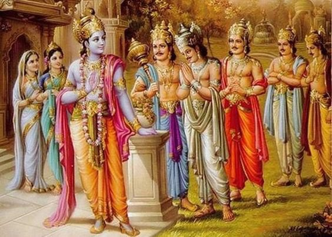

সরল ভাবার্থ
এই সেনাবাহিনীতে ভীম ও অর্জুনের সমান প্রভাবশালী অনেক বীর ধনুর্বিদ আছেন; যেমন— যুযুধান (সাত্য়কি), বিরাট এবং মহারথী দ্রুপদ।
বিস্তারিত ধর্মীয় ব্যাখ্যা
দুর্যোধন যখন পাণ্ডবদের ব্যুহ পর্যবেক্ষণ করছিলেন, তখন তাঁর চোখ প্রথমেই পড়ে বিপক্ষ দলের প্রধান বীরদের ওপর। তিনি দ্রোণাচার্যকে বলছেন যে পাণ্ডব বাহিনীতে এমন সব ধনুর্ধর আছেন যারা শক্তিতে ভীম ও অর্জুনের সমতুল্য। ধর্মীয় ও মনস্তাত্ত্বিক দিক থেকে এটি অত্যন্ত তাৎপর্যপূর্ণ। দুর্যোধন পাণ্ডবদের প্রতি প্রচণ্ড ঈর্ষা পোষণ করলেও তাদের শক্তিকে অবজ্ঞা করতে পারছেন না। 'ভীমার্জুনসমা'—এই শব্দটি ব্যবহারের মাধ্যমে তিনি বুঝিয়ে দিচ্ছেন যে ভীম ও অর্জুনের আতঙ্ক তাঁর মনে কতটা গভীর।
সাত্য়কি, বিরাট এবং দ্রুপদ—এঁরা প্রত্যেকেই কেবল বীর নন, বরং সত্য ও ধর্মের ধারক। বিরাট রাজা পাণ্ডবদের অজ্ঞাতবাসের সময় আশ্রয় দিয়েছিলেন এবং দ্রুপদ ছিলেন ধ্রুপদী মর্যাদার প্রতীক। এই বীররা ব্যক্তিগত লাভের জন্য নয়, বরং অধর্মের বিনাশ করার জন্য শ্রীকৃষ্ণের পতাকাতলে সমবেত হয়েছেন। দুর্যোধনের এই বর্ণনা আসলে তাঁর নিজের অন্তরের ভীতিকেই প্রকাশ করছে। যখন কোনো মানুষ অন্যায়ের পথে থাকে, তখন সে ন্যায়ের পথে থাকা অতি সামান্য শক্তিকেও অনেক বড় করে দেখে। দুর্যোধনের কাছে প্রতিটি পাণ্ডব যোদ্ধা যেন একেকটি যমদূত। এটি আমাদের জীবনের একটি বড় শিক্ষা—অধর্মের পথে সহস্র বীর থাকলেও মনের ভেতর যে শঙ্কা থাকে, তা মানুষকে আগেই দুর্বল করে দেয়। এখানে বীরত্বের চেয়েও বড় হয়ে উঠেছে সেই আদর্শ, যার জন্য এই যোদ্ধারা যুদ্ধ করতে এসেছেন।

[ছবি: পাণ্ডব শিবিরের সামনের সারিতে বীর সাত্যকি, বিরাট রাজা এবং রাজা দ্রুপদ বিশাল ধনুক হাতে যুদ্ধের জন্য প্রস্তুত হয়ে দাঁড়িয়ে আছেন।]